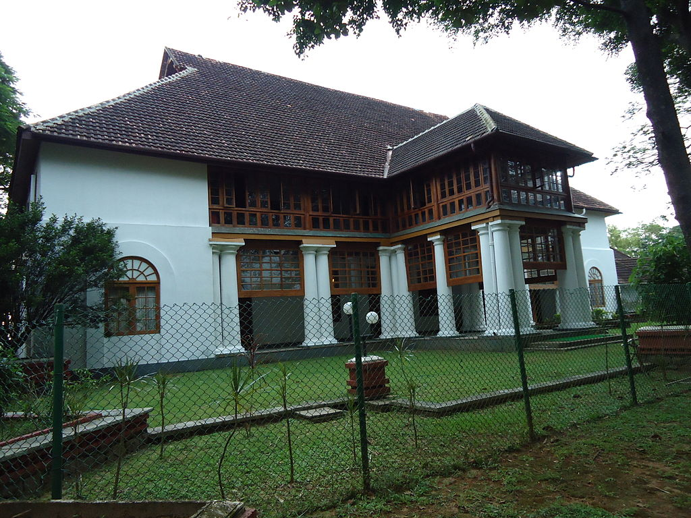

Ernakulam, the commercial capital of Kerala, served by an international airport, fine communication facilities, excellent accommodation, modern amenities and a lot of attractive tourist places gives a breathtaking experience for its visitors and settlers. The district took its form on 1st April 1958, by carving out the areas of erstwhile Travancore, Kochi & Malabar kingdoms. The word Ernakulam was derived from a Tamil word 'Erayanarkulam' which means 'Lord Shiva's abode'.
The commercial capital of Kerala and the most cosmopolitan of Kerala's cities, Cochin is a fascinating blend of cultures. From time immemorial, it has been the favorite destination of globe-trotters and explorers. Blessed by one of the finest natural harbors in the world, Cochin has been eulogised as the Queen of the Arabian Sea.
Marine Drive
Marine Drive is considered to be one of the most beautiful parts of the city. It is also called Shanmugham Road. The marine walk is the main hangout for the local populace as the view of the backwaters and the harbor from here is excellent. At night the lights from the various ships anchored at the harbor is just breathtaking.

Bolghatty Palace
Set in the backdrop of Kochi backwaters and placed amidst the beautiful garden, the Bolgatty Palace in Kochi has now transformed into a most wanted Heritage hotel in Kerala.
Fort Kochi
Fort Cochin probably has the best preserved history of colonial times and the ideal way to bring it alive is to take a walk down its old colonial roads, with its tree-lined avenues and quaint little lands and beside the seashores – where magnificent Chinese fishing nets sketch a spectacular skyline.
Fort Kochi
In and around Cochin are several cities of monumental value, but step into Fort Cochin, and you are in a totally different world.
The early history of Cochin is shrouded in obscurity. Inscriptions and literary works give us the names of some of the early rulers of the illustrious dynasty that once ruled Cochin.
As in Travancore, in Cochin too the desire for good government asserted itself even in the early days of British rule. A notable instance of an organised political move to change the status quo was in 1834. This was against the corrupt and inefficient administration of the Diwan, Sankara Menon. There was a similar move against Diwan Venkata Rao who had also proved himself to be unpopular.
In the general elections held to the Cochin Legislative Council in 1948, the Praja Mandal returned with a clear majority. By this time the organisation had merged in the Indian National Congress and hence the First Congress Ministry assumed office in Cochin with Ekkanda Warrier as Chief Minister. During his tenure of office, the state of Cochin was merged with Travancore, and the new state of Travancore-Cochin came into existence.